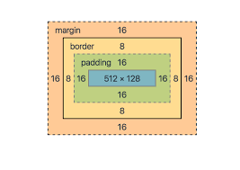

The CSS Box Model
In CSS, the term "box model" is used when talking about design and layout.
The CSS box model is essentially a box that wraps around every HTML element.
It consists of: margins, borders, padding, and the actual content.
The image below illustrates the box model:

Example:
This text is the content of the box. We have added a 50px padding,
20px margin and a 15px green border. Ut enim ad minim veniam, quis nostrud
exercitation ullamco laboris nisi ut aliquip ex ea commodo consequat. Duis aute
irure dolor in reprehenderit in voluptate velit esse cillum dolore eu fugiat nulla pariatur.
Excepteur sint occaecat cupidatat non proident, sunt in culpa qui officia deserunt mollit anim id
est laborum.